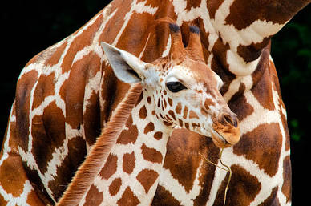
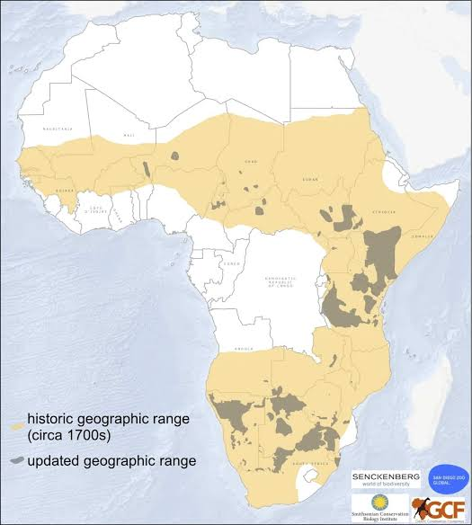
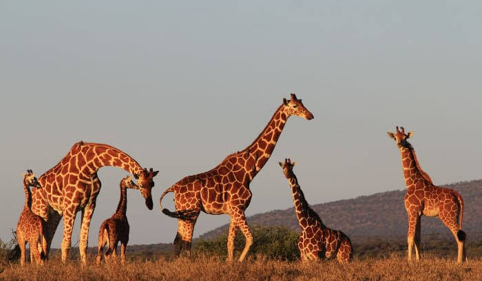
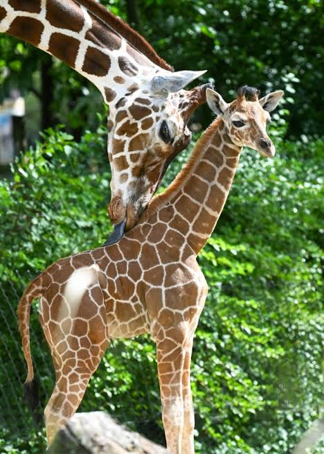
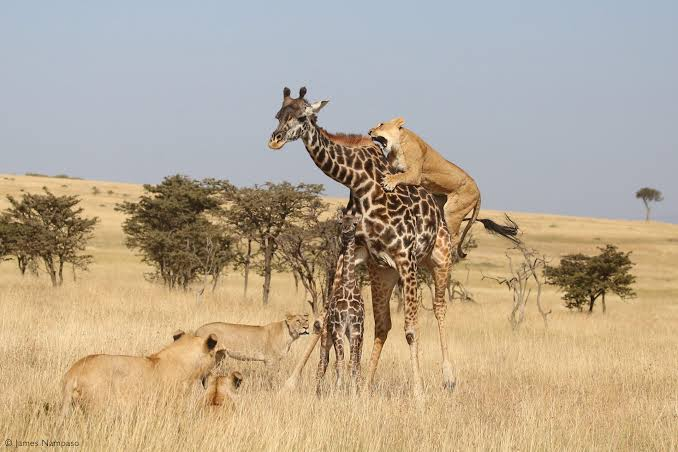

<!DOCTYPE html>
<html lang="en">
<head>
    <meta charset="UTF-8">
    <meta name="viewport" content="width=device-width, initial-scale=1.0">
    <title>Reticulated Giraffe Dossier</title>
</head>
<body>
    
</body>
</html>

<header>
<h1>Species Page: Reticulated Giraffe</h1>
</header>

<nav>
    <ul>
<li><a href="african-adventure.html">Home</a></li>
    </ul>
</nav>

<main>
    <article>
        <section id="basic-info">
            <h2>Scientific Information</h2>
            <p><strong>Common Name:</strong> Reticulated Giraffe </p>
            <p><strong>Status/Conservation:</strong> Endangered <sup><a href="#ref1">[1]</a></sup></p>
            <section id="classification">
                <h2>Full Scientific Classification</h2>
                <table border="1">
                    <tr><th>Taxonomic Rank</th><th>Classification</th></tr>
                    <tr><td>Kingdom</td><td>Animalia</td></tr>
                    <tr><td>Phylum</td><td>Chordata</td></tr>
                    <tr><td>Subphylum</td><td>Vertebrata</td></tr>
                    <tr><td>Class</td><td>Mammalia</td></tr>
                    <tr><td>Subclass</td><td>Theria</td></tr>
                    <tr><td>Order</td><td>Artiodactyla</td></tr>
                    <tr><td>Family</td><td>Giraffidae</td></tr>
                    <tr><td>Genus</td><td>Giraffa</td></tr>
                    <tr><td>Species</td><td>Giraffa reticulata</td></tr>
                </table>
            </section>
         <section id="physical profile">
            <h2>Physical Profile+</h2>
            <dl>
               <dt>Size range</dt>
               <dd> Stand up to 14–18 feet (4.3–5.5 m) tall. </dd>

               <dt>Weight</dt>
               <dd> Weighs 1,200–4,200 lbs (550–1,930 kg).</dd>
               <dt>Identification Markings</dt>
               <dd>Identification Markings: Characterized by distinct, sharp liver-colored polygonal patches outlined by a network of bright white lines.  
                <sup><a href="#ref2">[2]</a></sup></dd>
           </dl>
           
       </section>
       <section id="habitat-geography">
        <h2>Habitat & Geography</h2>
        <p>Habitats: Savannas, scrub forests, and woodlands.
            Distribution: Horn of Africa, including northern Kenya, southern Ethiopia, and Somalia.</p>
<h3>Distribution Map</h3>

        </section>
<section id="ecology and behavior">
    <h2>Ecology and Behavior</h2>
<h3>Feeding and Diet</h3>
<p>Browsers that feed primarily on acacia, mimosa, and wild apricot leaves high in tree canopies using their long prehensile tongues.</p>
<ul>
    
</section>
<section id="communication and social behavior">
    <h2>Communication and Social Behavior</h2>
    <p>Giraffes live in loose, fluid social groups called towers. They communicate via low-frequency infrasonic rumbles, visual body language, and snorts.</p>
    
</ol>
<h3>Life Cycle and Breeding Behaviors</h3>
                <p>Females give birth to a single calf after a 15-month gestation period. Calves can stand and run within hours of birth.</p>
                
            
            
                <section id="Predators">
    <h2>Predators</h2>
    <p>Adult reticulated giraffes are largely protected by their size and powerful kicks, but calves may occasionally face predation from lions, leopards, and hyenas.</p>
    
</section>
    </article>
</main>